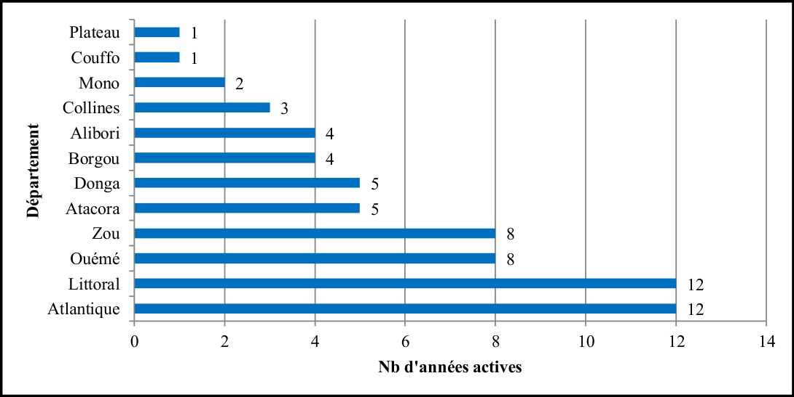
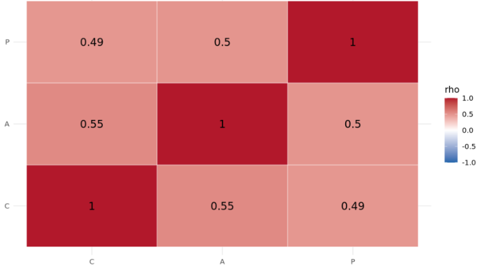
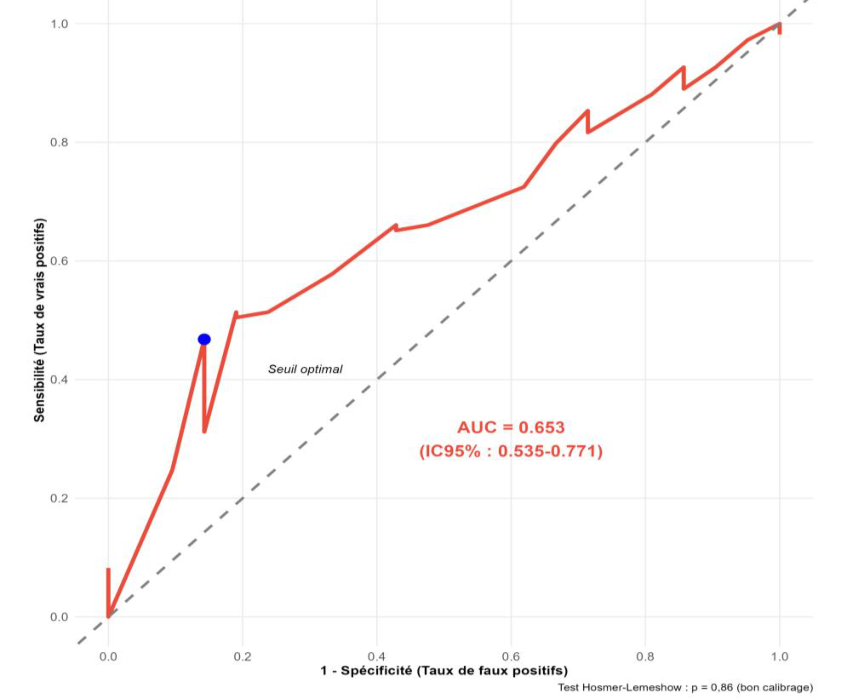
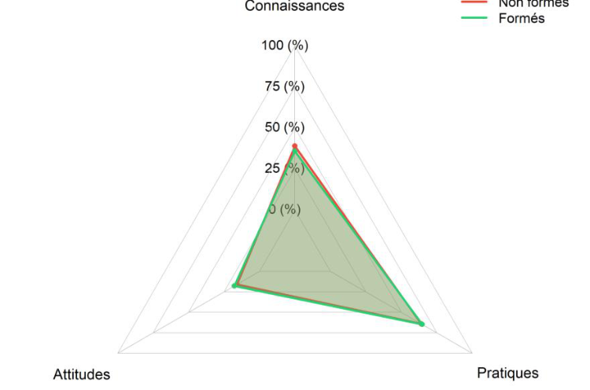
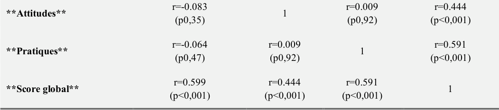

Statistiques & analysesStatistics & analysis
De la donnée brute à la figure prête à publier : voici comment je structure mon travail d'analyse, étape par étape.From raw data to publication-ready figures: how I structure my analysis work, step by step.
Nettoyage & qualité des donnéesData cleaning & quality
Contrôles de cohérence, gestion des valeurs manquantes et des doublons, anonymisation, dictionnaires de variables et traçabilité complète (REDCap, Epi Info).Consistency checks, handling of missing values and duplicates, anonymisation, variable dictionaries and full traceability (REDCap, Epi Info).
Scores & fiabilitéScores & reliability
Construction de scores composites (connaissances, attitudes, pratiques), cohérence interne (alpha de Cronbach), seuillage en niveaux interprétables.Building composite scores (knowledge, attitudes, practices), internal consistency (Cronbach's alpha), cut-offs into interpretable levels.
Descriptif & bivariéDescriptive & bivariate
Prévalences avec IC exacts, tableaux de contingence, tests du χ² et non paramétriques, comparaisons de groupes et lecture des effectifs.Prevalences with exact CIs, contingency tables, χ² and non-parametric tests, group comparisons and sample-size reading.
ModélisationModelling
Régressions logistique et linéaire multiple, odds ratios ajustés avec IC95 %, sélection et vérification des variables, contrôle des hypothèses.Logistic and multiple linear regression, adjusted odds ratios with 95% CI, variable selection and checking, assumption control.
Performance & validationPerformance & validation
Courbes ROC et AUC, seuils optimaux (Youden), calibrage (Hosmer-Lemeshow), matrices de confusion et validation de la robustesse.ROC curves and AUC, optimal cut-offs (Youden), calibration (Hosmer-Lemeshow), confusion matrices and robustness checks.
Temps & espaceTime & space
Séries annuelles et saisonnalité, cartes choroplèthes sous QGIS, lecture spatio-temporelle des dynamiques épidémiologiques.Annual series and seasonality, choropleth maps in QGIS, spatio-temporal reading of epidemiological dynamics.
Aperçu de réalisationsSelected deliverables
Dix figures, sans commentaire : elles parlent d'elles-mêmes. Les projets sources ne sont pas identifiés ; les versions nettes et leurs interprétations restent confidentielles.Ten figures, no commentary: they speak for themselves. Source projects are not identified; the sharp versions and their interpretations remain confidential.








